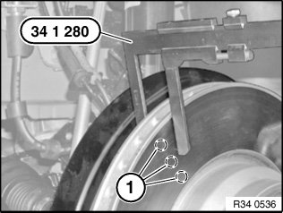
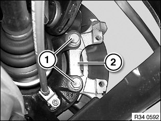
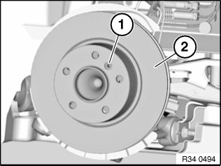

34 21 320 Removing and Installing/Renewing Both Brake Discs
34 21 320 Removing and installing/renewing both brake discsSpecial tools required:
Necessary preliminary tasks:
^ Remove wheels.
^ Remove and clean brake pads
Check minimum brake disc thickness:
- Position special tool 34 1 280 at three measuring points in area (1) and measure.

- Compare measurement result and lowest value with setpoint value.
If the brake discs are replaced, you must also fit new brake pads.
Always replace brake discs in pairs.
Important!
New brake pads may only be fitted if the brake disc thickness is greater than the minimum brake disc thickness (MIN TH).

Release bolts (1) and detach brake anchor plate.
Installation:
Replace screws.
Tightening torque 34 21 2AZ.
Important!
To release brake disc: Do not under any circumstances strike friction ring with a hammer or similar!

If necessary, carefully tap on base of brake disc chamber with a rubber mallet.
Clean contact surface of brake disc at wheel hub thoroughly and remove traces of corrosion.
Unevenness on contact surface may result in distortion of brake disc!
Release screw (1) and remove brake disc (2).
Installation:
Replace screw.
Tightening torque 34 21 1AZ.
After Installation:
^ Adjusting parking brake
^ Read and comply with notes on braking in new brake discs / brake pads.